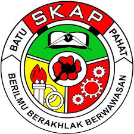
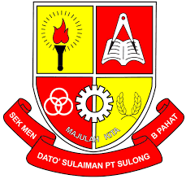

My Education
Academic Background & Achievements

Current Education
Diploma in Information Management
📅 2023 - present (Expected: 2026)
Institution: Universiti Teknologi MARA (UiTM)
Campus: UiTM Segamat, Johor
Faculty: Faculty of Information Science
Status: last Year Student

School
📅 2012 - 2017
Institution: Sekolah Kebangsaan Air Putih

📅 2017 - 2022
Institution: Sekolah Menengah Kebangsian Dato'Sulaiman

Previous Education
Sijil Pelajaran Malaysia (SPM)
📅 2022
School: SMK Dato'Sulaiman, Batu Pahat, Johor
Results: 5A 1B 2C 1D 1E
Co-Curricular Activities
University Level (UiTM):
| Activity/Club | Position | Year |
|---|---|---|
| Information Management Club (IMS) | Publicity and Multimedia | 2023 - 2025 |
| Chess Club | Treasurer | 2023 - 2025 |
School Level (Secondary):
- Pantun Club - Member (2020-2022)
- Badminton Team - Player (2018-2020)
- (PBSM) Malaysian Red Crescent - Active Participant (2018-2020)
- Fireman Club - Member (2020-2022)
Certifications & Courses
- Introduction to HTML & CSS - Online Course (2024)
- JavaScript Basics - Codecademy (2024)
- Microsoft Office Specialist - Microsoft (2023)
- Database Fundamentals - Online Learning Platform (2024)
Skills Developed Through Education
Technical Skills:
- Web Development - HTML, CSS, JavaScript (Basic)
- Programming - C++, PHP (Basic)
- MS Office - Word, Excel, PowerPoint (Advanced)
Soft Skills:
- Critical thinking
- Communication and presentation skills
- Teamwork and collaboration
- Research and analytical skills
Future Education Plans
Short-term Goal:
- Complete Diploma with great of CGPA 3.5 and above
- Join agent of insurance
- Obtain more IT skills
Long-term Goal:
- Pursue Bachelor's Degree in Political science or IT
- Improving self in learning programming languages
* All education records are accurate and verified as of December 2025